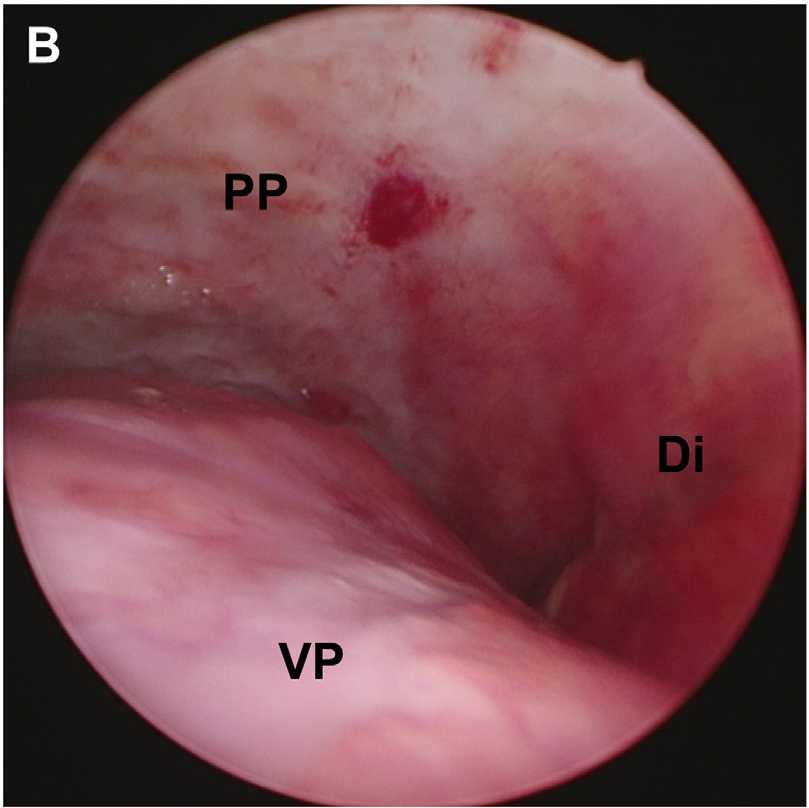

Two pleural surfaces, one operative view
Diagnostic thoracoscopy in a 70-year-old woman with left pleural effusion and thickening. The original labels identify the wall-side lining, organ-side lining and diaphragm. Subsequent histology established epithelioid mesothelioma.

- PP
- Parietal pleura
Body-wall lining - VP
- Visceral pleura
Lung surface - Di
- Diaphragm
Spatial relationship: PP and VP bound this exposed operative cavity; Di marks the diaphragm. This independent clinical view does not establish normal pleural apposition or fluid-film width, nor register to other ultrasound/MRI cases or their scales.
The source describes diffuse whitening of the parietal pleura and loss of the usual rib/intercostal architecture. This is a clinical mesothelioma case, not normal pleural appearance.
The source describes standard diagnostic thoracoscopy but does not specify ventilation, lung deflation, drainage or insufflation gas/pressure. The clinical left side does not establish camera axes. No metric calibration or normal fluid-film measurement is supplied.
van Huizen et al. (2025), Rapid On-Site Histology of Lung and Pleural Biopsies Using Higher Harmonic Generation Microscopy and Artificial Intelligence Analysis, Modern Pathology 38:100633, Figure 6B · CC BY 4.0, © 2024 The Authors. Declared 809 × 808 native crop from the published 1659 × 1757 figure, rectangle (850,55–1659,863). Original B/PP/VP/Di labels and pixels preserved; no new anatomical marks or resampling.